항공산업기사 (2004-03-07 기출문제)
1과목: 항공역학
1. 항공기가 트림(trim)상태로 비행한다는 것은?
- CL=CD인상태
- CMcg＞0인상태
- CMcg=0인상태
- CMcg＜0인상태
(정답률: 70%)

2. 지구의 대기는 4개의 기류층으로 되어있다. 지구에서 가장 가까운 층부터의 기류층 순서는?
- 성층권, 대류권, 중간권, 외기권
- 대류권, 성층권, 중간권, 외기권
- 대류권, 중간권, 성층권, 외기권
- 성층권, 중간권, 대류권, 외기권
(정답률: 88%)
3. 조정피치 프로펠러에 대한 설명으로 가장 올바른 것은?
- 지상에서 피치를 조정한다.
- 비행중 조종사가 피치를 조정한다.
- 기관의 회전속도가 유지되도록 자동으로 피치가 조정된다.
- 피치가 일정하도록 기관의 회전속도가 조정된다.
(정답률: 58%)
4. 날개면적이 100[m2]이며,고도 5,000[m]에서 150[m/sec]로 비행하고 있는 항공기가 있다. 이때의 항력계수는 0.02이다. 필요마력[㎰]은? (단, 공기의 밀도(ρ )는 0.070[㎏· s2/m4]이다.)
- 1,890
- 2,500
- 3,150
- 3,250
(정답률: 68%)
5. 어떤 비행기가 230㎞/h로 비행하고 있다. 이 비행기의 상승률이 8㎧라고 하면, 이 비행기 상승각은 얼마로 볼 수 있는가?
- 4.8°
- 5.2°
- 7.2°
- 9.4°
(정답률: 67%)
6. 헬리콥터의 정지비행 상승한도(hovering ceiling)를 가장 올바르게 표현한 것은?
- 이용마력＞필요마력
- 이용마력=필요마력
- 이용마력＜필요마력
- 유도항력마력=이용마력+필요마력
(정답률: 77%)
7. 다음의 진술 내용중 가장 올바른 것은?
- 조종면을 조작하기 위한 조종력은 힌지 모멘트의 크기에 관계가 있다.
- 조종면에 변위를 주게 되어도 그 윗면과 아랫면 또는 좌측면과 우측면의 압력분포에는 영향을 미치지 않는다.
- 힌지 모멘트는 항상 비행기의 조종을 용이하게 하는데 도움을 준다.
- 힌지 모멘트는 힌지모멘트 계수, 동압 그리고 조종면의 크기에 반비례한다.
(정답률: 70%)
8. 비행중 항공기가 항력과 추력이 같으면 어떻게 되는가?
- 감속전진 비행한다.
- 가속전진 비행한다.
- 정지한다.
- 등속도 비행을 한다.
(정답률: 90%)
9. 프로펠러 진행율(advance ratio)의 정의 J = V/nD에서 진행율 J의 단위는?
- rps(revolutions per second)
- m/s
- m
- 무차원
(정답률: 72%)
10. 항공기의 활공각을 θ 라고 할 때 tanθ 의 특성으로 가장 올바른 것은?
- 양항비와 비례한다.
- 양항비와 반비례한다.
- 고도와 반비례한다.
- 활공속도와 반비례한다.
(정답률: 74%)
11. 항공기에 쳐든각(dihedral angle)을 주는 가장 큰 이유는 무엇인가?
- 임계 마하수를 높힐 수 있다.
- 익단실속을 방지할 수 있다.
- Pitching moment에 대한 안정성을 준다.
- Rolling과 Yawing moment에 대한 안정성을 준다.
(정답률: 63%)
12. 유동하는 아음속 유체의 속도를 구하기 위해서는 다음 어느 것을 측정해야 하는가?
- 정압과 전온도
- 정압과 온도
- 전압과 전온도
- 정압과 전압
(정답률: 82%)
13. 날개 밑에 장착되는 보틸론(Vortilon)의 역할은?
- 가로안정 유지
- 딥 실속(deep stall)방지
- 유도항력 감소
- 옆 미끄럼(side slip) 방지
(정답률: 71%)
14. 항공기의 세로 안정성(static longitudinal stability)에 대한 설명으로 틀린 것은?
- 무게 중심위치가 공기역학적 중심보다 전방에 위치 할 수록 안정성이 좋아진다.
- 날개가 무게 중심위치 보다 높은 위치에 있을 때 안정성이 좋다.
- 꼬리날개 면적을 크게 하면 안정성이 좋다.
- 꼬리날개 효율을 작게 할 수록 안정성이 좋다.
(정답률: 83%)
15. 헬리콥터의 총중량이 800kgf, 엔진 출력 160HP, 회전날개의 반경이 2.8m, 회전날개 깃의 수가 2개일 때의 원판 하중은?
- 28.5 kgf/m2
- 30.5 kgf/m2
- 32.5 kgf/m2
- 35.5 kgf/m2
(정답률: 72%)
16. 비행기의 날개에 사용되는 Airfoil(에어포일)의 요구조건 으로 적합한 것은?
- 강도를 위해 두꺼울수록 좋다.
- CL 특히 CLmax가 클 것
- CD 특히 CDmax가 클 것
- 앞전 반경은 클수록 좋다.
(정답률: 80%)
17. 프로펠러의 추력에 대한 설명 내용으로 가장 올바른 것은?
- 프로펠러의 추력은 공기밀도에 비례하고 회전면의 넓이에 반비례한다.
- 프로펠러의 추력은 회전면의 넓이에 비례하고 깃의 선속도의 자승에 반비례한다.
- 프로펠러의 추력은 공기밀도에 반비례하고 회전면의 넓이에 비례한다.
- 프로펠러의 추력은 회전면의 넓이에 비례하고 깃의 선속도의 자승에 비례한다.
(정답률: 68%)
18. 비행기의 무게가 2,500[㎏]이고,큰 날개의 면적이 20[m2]이며, 해발고도(밀도가 0.125[㎏f· s2/m4]임)에서의 실속 속도가 120[㎞/h]인 비행기의 최대양력계수(CLmax)는 얼마인가?
- 0.5
- 1.8
- 2.8
- 3.4
(정답률: 65%)
19. 와류 발생장치(VORTEX GENERATOR)의 주 목적은?
- 층류의 유지
- 익단실속의 방지
- 불규칙 흐름의 제거
- 항력감소
(정답률: 64%)
20. 형상항력에 대한 설명으로 가장 거리가 먼 것은?
- 이상유체에는 나타나지 않는 항력이다.
- 공기가 점성을 가지기 때문에 생기는 항력이다.
- 날개골의 형태에 따라 다른값을 가지는 항력이다.
- 날개표면에 유도항력에 의해 발생한다.
(정답률: 61%)
2과목: 항공기관
21. 터보 제트 엔진의 추진효율에 대한 설명중 가장 올바른 것은?
- 추진효율은 배기구 속도가 클수록 커진다.
- 추진효율은 기관의 내부를 통과한 1차공기에 의하여 발생되는 추력과 2차공기에 의하여 발생되는 추력의 합이다.
- 추진효율은 기관에 공급된 열에너지와 기계적 에너지로 바꿔진 양의 비이다.
- 추진효율은 공기가 기관을 통과하면 얻는 운동에너지에 의한 동력과 추진 동력의 비이다.
(정답률: 46%)
22. 근래 기화기의 자동연료흐름 메터링기구는 다음 어느것에 의하여 작동되는가?
- 기화기를 통과하는 공기의 질량과 속도
- 기화기를 통과하는 공기의 속도
- 기화기를 통하여 움직이는 공기의 질량
- 드로틀 위치
(정답률: 53%)
23. 정속 프로펠러에서 프로펠러 피치 레버(Propeller Pitch Lever)를 조작했는데 프로펠러가 피치 변경이 되지 않는 결함이 발생했다면 가장 큰 원인은 무엇이라 추정하는가?
- 조속기(Governor)의 릴리이프 밸브가 고착되었다.
- 파일럿 밸브(Pilot Valve)의 틈새가 과도하게 크다.
- 조속기(Governor) 스피더 스프링(Speeder Spring)이 파손되었다.
- 페더링 스프링(Feathering Spring)이 마모되었다.
(정답률: 71%)
24. 마그네토(Magneto)의 브레이커 포인트는 일반적으로 어떤 재료로 되어 있는가?
- 은(silver)
- 구리(copper)
- 백금(Platinum)-이리듐(Iridium) 합금
- 코발트(Cobalt)
(정답률: 83%)
25. 터빈 블레이드 끝(Blade Tip)과 터빈 케이스 안쪽의 에어 시일(Air Seal)과의 간격을 줄여주기 위해서 터빈 케이스 외부를 냉각 시켜준다. 여기에 사용되는 냉각 공기는?
- 압축기 배출공기
- 연소실 냉각공기
- 팬 압축공기
- 외부공기
(정답률: 47%)
26. 수평대향형엔진(horizontal opposed engine)의 점화순서에서 특히 고려해야 할 점은?
- 점화순서의 균형을 맞추어 엔진의 진동을 최소가 되게
- 순항 비행시 최대의 회전 토-큐가 발생하도록
- 기계적 효율이 최대가 되게
- 설계가 간단하게
(정답률: 80%)
27. 가스터빈 엔진의 연소실에 대한 설명 내용으로 가장 올바른 것은?
- 압축기 출구에서 공기와 연료가 혼합되어 연소실로 분사된다.
- 연소실로 유입된 공기의 75% 정도는 연소에 이용되고 나머지 25% 정도의 공기는 냉각에 이용된다.
- 1차 연소영역을 연소영역이라 하고 2차 연소영역을 혼합 냉각영역이라고 한다.
- 최근 JT9D, CF6, RB-211 엔진등은 물론 엔진 크기에 관계없이 캔형의 연소실이 사용된다.
(정답률: 52%)
28. 계(system)와 주위(surrounding)가 열교환(heattransfer)을 하는 방법이 아닌 것은?
- 전도 (conduction)
- 탄화 (pyrolysis)
- 복사 (radiation)
- 대류 (convection)
(정답률: 81%)
29. 지상에서 작동중인 항공기 왕복기관의 카울 플랩(cowl flap)의 위치로 가장 올바른 것은?
- 완전 닫힘
- 완전 열림
- 1/3 열림
- 1/3 닫힘
(정답률: 71%)
30. 지상에서 작동중인 엔진이 거칠게 운전중인 것을 발견하여 확인한 결과, 마그네토 드롭(magneto drop)은 정상이지만 다기관압력(manifold pressure)이 정상보다 높다면 가장 직접적인 원인은 무엇인가?
- 마그네토중 한개의 하이텐션 리이드(high-tensionlead)가 불확실하게 연결되어 있다.
- 흡입 다기관(intake manifold)에서 공기가 새고있다.
- 하나의 실린더가 작동을 하지 않는다.
- 실린더의 서로다른 점화 플러그의 결함이다.
(정답률: 41%)
31. 가스터빈 기관의 주연료 펌프에서 펌프출구압력을 조절 하는 것은?
- 릴리프 밸브
- 체크 밸브
- 바이패스 밸브
- 드레인 밸브
(정답률: 76%)
32. FADEC(Full Authority Digital Electronic Control) 이라는 엔진제어기능 중 잘못된 것은?
- 엔진 연료 유량
- 압축기 가변 스테이터 각도
- 실속 방지용 압축기 블리드 밸브
- 오일 압력
(정답률: 57%)
33. 1기압상태에서 물 1g의 온도를 1℃높이는데 필요한 열량은 얼마인가?
- 1칼로리(Calorie)
- 1BTU(British Thermal Unit)
- 1주울(Joule)
- 1비열
(정답률: 48%)
34. 항공기 왕복기관의 제동마력과 단위시간당 기관의 소비한 연료 에너지와의 비를 무엇이라 하는가?
- 제동열효율
- 기계열효율
- 연료소비율
- 일의 열당량
(정답률: 58%)
35. 가스터빈의 이상 싸이클로써 열효율이 맞게 짝지어진 것은?
- Otto 싸이클,
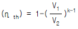
- Sabathe 싸이클,
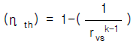
- Diesel 싸이클,
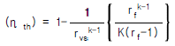
- Brayton 싸이클,
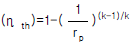
(정답률: 67%)
36. 프로펠러 깃(blade) 트랙킹(tracking)은 무엇을 결정하는 절차인가?
- 항공기 세로축(longitudinal axis)에 대해서 프로펠러의 회전면을 결정하는 절차
- 진동을 방지하기 위하여 각 깃 받음각을 동일하게 결정하는 절차
- 각 깃각(blade angle)을 특정한 범위 내에 들어오게 하는 절차
- 각 프로펠러 깃의 회전 선단(tip) 위치가 동일한지 여부를 결정하는 절차
(정답률: 58%)
37. 실린더 체적이 80in3, 피스톤 행정체적이 70in3이라면 압축비는 얼마인가?
- 10:1
- 9:1
- 8:1
- 7:1
(정답률: 70%)
38. 가스 터빈의 배기 노즐의 주 목적은?
- 배기 가스의 속도를 증가시키기 위하여
- 최대 추력을 얻을 때 소음을 감소하기 위하여
- 난류를 얻기 위하여
- 배기 가스의 압력을 증가시키기 위하여
(정답률: 77%)
39. 왕복기관의 경우 밸브 개폐시기 로서 흡기밸브가 상사점 이전 30° 에서 열리고 하사점 이후 60° 에서 닫히며, 배기밸브가 하사점 이전 60° 에서 열리고 상사점 이후 15°에서 닫히는 경우 밸브오버랩(valve over lap)은 몇도인가?
- 15°
- 45°
- 60°
- 75°
(정답률: 84%)
40. 터보 제트 엔진의 축류형 2축 압축기는 어떠한 효율이 개선 되는가?
- 더많은 터빈 휠(wheel)이 사용될 수 있다.
- 더높은 압축비를 얻을 수 있다.
- 연소실로 들어오는 공기의 속도가 증가된다.
- 연소실 온도가 축소된다.
(정답률: 77%)
3과목: 항공기체
41. 2017 알루미늄 리벳의 다른 재질 표시방법은?
- DD
- AD
- A
- D
(정답률: 59%)
42. 합금강 SAE 6150의 1의 숫자는 무엇을 표시 하는가?
- 1%의 Chrominum 함유량
- 0.1%의 Carbon 함유량
- 1%의 Nickel 함유량
- 0.1%의 Mangans 함유량
(정답률: 49%)
43. 상품명이 케블러(KEVLAR)라고 하며 황색이고 전기 부도체이며 전파도 투과시키는 강화섬유는?
- 보론 섬유
- 알루미나 섬유
- 아라미드 섬유
- 유리 섬유
(정답률: 74%)
44. 판금 가윗날의 여유각에 대하여 가장 올바르게 설명한 것은?
- 아랫날과 윗날이 이루는 각을 말한다.
- 날면의 경사를 말한다.
- 수직 절단면과 윗날 및 아랫날이 만드는 각을 말한다
- 동력 전단기에서의 여유각은 3∼6° 이고, 판금가위는 7∼9° 이다.
(정답률: 56%)
45. 너트(NUT)의 일반적인 식별방법이 아닌 것은?
- 머리 모양에 식별기호나 문자가 있다.
- 금속 특유의 광택으로 식별할 수 있다.
- 내부에 삽입된 화이버(Fiber) 또는 나이론의 색으로 식별한다.
- 구조 및 나사 등으로 식별한다.
(정답률: 47%)
46. 케이블 터미날 핏팅(fitting)연결방법에서 원래부품과 똑같은 강도를 보장할 수 있는 방법은?
- 5-tuck woven splice방법
- 스웨이징(swaging)방법
- wrap-solder cable splice방법
- 모두 다 원래의 부품과 같은 강도를 가진다.
(정답률: 73%)
47. 기체구조의 형식에서 응력 외피구조(STRESS SKINSTRUCTURE)를 가장 올바르게 설명한 것은?
- 목재 또는 강판으로 트러스(삼각형구조)를 구성하고 그위에 천 또는 얇은 금속판의 외피를 씌운 구조형이다.
- 외피가 항공기의 형태를 이루면서 항공기에 작용하는 하중의 일부를 외피가 담당하는 구조이다.
- 두개의 외판 사이에 벌집형, 거품형, 파(WAVE)형등의심을 넣고 고착시켜 샌드위치 모양으로 만든 구조이다.
- 하나의 구조요소가 파괴되더라도 나머지 구조가 그기능을 담당해 주는 구조이다.
(정답률: 81%)
48. 엔진이 2대인 항공기의 엔진을 1750㎏의 모델에서 1850㎏의 모델로 교환하였으며, 엔진의 위치는 기준선에서 40㎝에 위치하였다. 엔진을 교환하기전의 항공기 무게평형(Weight And Balance)기록에는 항공기 무게 15000㎏,무게중심은 기준선 후방 35㎝에 위치하였다면, 새로운 엔진으로 교환후 무게중심위치는?
- 기준선 전방 32㎝
- 기준선 전방 20㎝
- 기준선 후방 35㎝
- 기준선 후방 45㎝
(정답률: 57%)
49. 드릴작업 후 드릴구멍 가장자리에 남은 칩을 효과적으로 제거하기 위한 방법을 가장 올바르게 설명한 것은?
- 리벳 작업시 자동적으로 제거되므로 제거할 필요가 없다.
- 줄을 사용하여 갈아서 제거한다.
- 드릴구멍 크기의 한배 또는 두배 크기의 드릴을 사용하여 손으로 돌려 제거한다.
- 같은 크기의 드릴을 사용하여 반대 방향에서 뚫어 제거한다.
(정답률: 55%)
50. 항공기 앞착륙 장치의 좌우 방향 진동를 방지하거나 감쇠 시키는 장치는 무엇인가?
- 시미댐퍼
- 방향제어장치
- 오리피스
- 오버센터 링크
(정답률: 83%)
51. 항상 압축응력과 인장응력이 동시에 발생하는 경우는?
- 순수 전단(pure shear)
- 순수 휨(pure bending)
- 순수 비틀림(pure torsion)
- 평면 응력(plane stress)
(정답률: 55%)
52. 고정와셔(lock washer)가 사용되는 곳으로 가장 적당한 것은?
- 주 및 부구조물 고정장치로 사용될 때
- 파손시 공기흐름에 노출되는 곳
- 자동고정너트(Self locking nut)나 Castllated-nut가 적합하지 않은 곳에 사용된다.
- Screw를 자주 장탈하는 부분
(정답률: 60%)
53. 하이드로릭 모터(Hydraulic Motor)로 스크루 잭(Screw Jack)을 회전시켜 작동되는 조종면은?
- 도움날개(Aileron)
- 수평 안정판(Horizontal Stabilizer)
- 탭(Tab)
- 스피드 브레이크(Speed Brake)
(정답률: 44%)
54. 다음 중 설계하중을 나태낸 것은?
- 설계하중 = 종극하중 × 종극하중계수
- 설계하중 = 극한하중 × 극한하중계수
- 설계하중 = 극한하중 × 안전계수
- 설계하중 = 한계하중 × 안전계수
(정답률: 59%)
55. 길이 5m인 받침보에 있어서 A단에서 2m인 곳에 800kg의 집중하중이 작용할 때 A단에서의 반력은 얼마인가?
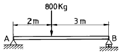
- 480kg
- 400kg
- 320kg
- 300kg
(정답률: 50%)
56. 전단응력만 작용하는 곳에 사용되고 그리프(GRIP)길이가 생크의 직경보다 적은 곳에 사용하여서는 안되는 RIVET는?
- 폭발리벳트(EXPLOSIVE RIVET)
- 블라인드 리벳트(BLIND RIVET)
- 하이쉐어 리벳트(HI SHEAR RIVET)
- 기계적 확장 리벳트(MECHANICALLY EXPAND RIVET)
(정답률: 65%)
57. 다음과 같은 속도 하중배수(V-n)선도에서 실속 속도의 표시가 맞게 된것은? (단,Vs:실속속도,n1:제한하중배수)
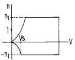
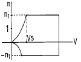
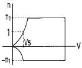
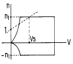
(정답률: 77%)
58. 알루미늄 판재의 굽힘 허용값을 구하면?
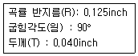
- 0.228인치
- 0.259인치
- 0.342인치
- 0.456인치
(정답률: 64%)
59. 다음 부재 중 동체구조 부재에 들지 않는 것은?
- 리브
- 벌크헤드
- 세로대(longeron)
- 프레임(frame)
(정답률: 76%)
60. 항공기 동체구조 점검 중에 알루미늄 합금의 구조물이 층층이 떨어지는 것을 발견하였다. 일반적으로 이와 같은 부식을 무엇이라 부르는가?
- 이질금속간의 부식
- 응력부식
- 마찰부식
- 엑스폴리에이션
(정답률: 58%)
4과목: 항공장비
61. 계기의 T형 배치에서 중심이 되는 것은?
- 자세지시계
- 속도계
- 고도계
- 방위지시계
(정답률: 72%)
62. 열전쌍식 온도계에 사용되는 재료가 아닌 것은?
- 철-콘스탄탄
- 구리-콘스탄탄
- 크로멜-알루멜
- 카본-바이메탈
(정답률: 62%)
63. 항공기가 비행을 하면서 관성항법장치(INS)에서 얻을 수 있는 정보와 가장 관계가 먼 것은?
- 위치
- 자세
- 자방위
- 속도
(정답률: 60%)
64. 교류 발전기의 출력 주파수를 일정으로 유지시키는데 사용되는 것은?
- magamp
- brushless
- carbon pile
- C.S.D
(정답률: 74%)
65. 안테나의 종류와 특성중 주파수 특성에 의해서 분류한 안테나는?
- 렌즈 안테나
- 광대역 안테나
- 유전체용 안테나
- 곡면 반사형 안테나
(정답률: 60%)
66. 절대고도란 고도계의 어떤 setting방법인가?
- QNH setting
- QNE setting
- QNT setting
- QFE setting
(정답률: 53%)
67. 결빙 감지기의 종류가 아닌 것은?
- 가변저항 이용
- 압력차이 이용
- 기계적 항력 이용
- 고유진동 이용
(정답률: 43%)
68. 다음의 항공기 외부등 중 충돌방지등은 어느 것인가?
- 동체 아랫면 : 점멸 백색등
- 왼쪽 날개끝 : 백색등
- 꼬리 끝 : 붉은색등
- 동체 상부 또는 수직 안정판 꼭대기 : 붉은색등
(정답률: 67%)
69. 델린져 현상의 원인은 어느 것인가?
- 흑점의 증가
- 자기람
- 태풍
- 태양표면의 폭발
(정답률: 63%)
70. 유압펌프에서 정용량형 펌프란?
- 1 회전에 대한 이론 토출량이 일정
- 펌프의 회전수와 관계 없이 일정량의 유압유 토출
- 부하 압력 변동에 관계없이 일정용량의 유압유 토출
- 유압 실린더의 용량에 따라 일정량의 유압유 토출
(정답률: 32%)
71. 대형 항공기 공압계통에서 공통 매니폴드(Manifold)에 공급되는 공기의 온도조절은 어느것에 의해 이루어지는가?
- 팬 에어(Fan Air)
- 열 교환기(Heat Exchanger)
- 램 에어(Ram Air)
- 브리딩 에어(Bleeding Air)
(정답률: 54%)
72. 계기 착륙 장치(ILS) 계통에서 로칼라이저(Localizer) 수신장치의 기능을 가장 올바르게 표현한 것은?
- 활주로 수평, 진입 평면에 대해 항공기 진입각 표시
- 활주로 상,하 연장 평면에 대해 항공기 진입각 표시
- 활주로 수직, 수평 연장선에 대해 진입 중인 항공기의 위치 표시
- 활주로 중심, 수직인 평면에 대해 진입 중인 항공기의 위치 표시
(정답률: 60%)
73. 자이로를 이용하고 있는 계기가 아닌 것은?
- 자이로 수평 지시계
- 자기 컴퍼스
- 방향 자이로 지시계
- 선회 경사계
(정답률: 57%)
74. 작동유 압력이 일정 압력 이하로 떨어지면 유로를 차단하는 기능을 갖는 것은?
- SYSTEM ACCUMULATOR
- SYSTEM RELIEF VALVE
- SYSTEM RETURN FILTER MODULE
- PRIORITY VALVE
(정답률: 56%)
75. 고도계의 탄성오차가 아닌 것은?
- 와동오차
- 편위
- 히스테리시스
- 잔류효과
(정답률: 56%)
76. 니켈-카드뮴 축전지에서 24V축전지는 몇개의 셀을 직렬로 연결하였는가?
- 12개
- 15개
- 17개
- 19개
(정답률: 51%)
77. 그림의 교류회로에서 임피이던스를 구한 값은?
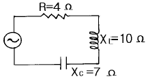
- 5[Ω]
- 7[Ω]
- 10[Ω]
- 17[Ω]
(정답률: 59%)
78. Rain Protection System 설명중 틀린 것은?
- 전면의 시야를 비나 눈으로 부터 흐려짐을 방지한다.
- 윈드 쉴드 와이퍼(Wind Shield Wiper)가 장착되어 있다.
- Rain Repellent System 이 장착되어 있다.
- 윈드 쉴드(Wind Shield)내부의 김 서림을 방지한다.
(정답률: 68%)
79. 분류기(shunt)에 대한 설명 내용으로 가장 올바른 것은?
- 저항, 전압등의 전류를 측정할 수 있는 메타
- 축전지가 충전되는가를 알기 위한 Am meter
- 계기 보호용으로 삽입된 회로상의 휴즈
- 전류계 외측에 대부분의 전류를 by-pass시키는 금속 저항체
(정답률: 55%)
80. 시동 토오크가 크고 입력이 과대하게 되지 않으므로 시동 운전시 가장 좋은 전동기는?
- 분권 전동기
- 직권 전동기
- 복권 전동기
- 화동복권 전동기
(정답률: 78%)